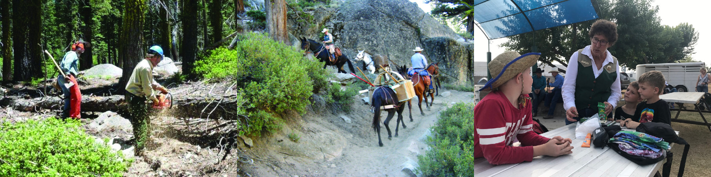

Backcountry Horsemen of California

BCHC focuses its efforts in three key areas:
Members of the Backcountry Horsemen of California are dedicated to preserving the traditional use of recreational saddle and pack stock in the backcountry. Through education we encourage members and the public to improve and promote the use, care and development of trails, campsites, streams and meadows, and to advocate good trail manners.
The State Education Committee acts under the authority of the BCHC State Board of Directors
with a Vice President (or Co-Vice Presidents) elected by the BCHC State Board. The State
Education Committee is made up of one delegate from each BCHC unit. The committee is
responsible for gathering, organizing and producing educational materials. These materials are to
be used by the units and their Education Committees to plan and conduct educational programs.
The State Education Committee is also responsible for the education component of the annual
Rendezvous and manages
the Wilderness Rider
, Masters of Leave No Trace/Leave
No Trace Programs. For more information, please contact the
BCHC VP of Education.
The BCHC State Education Steering Committee is responsible for overseeing the gathering,
organizing and producing of educational materials to be used by BCHC, its units and unit
Education Chairpersons.
The State Education Steering Committee is comprised of the
Vice
President of Education, the Vice Chairman of Education (appointed by the Vice President
or Co-Vice Presidents of Education from existing Education Steering Committee members), and
four members of the Education Committee. It is preferred that Education Steering Committee
members are, or have been, a unit Education Chair, a Wilderness Rider, or a Master of LNT.
New Education Steering Committee members are selected via an application process by the VP
of Education and existing members of the State Education Steering Committee. Education
Steering Committee members serve two-year terms.
BCHC’s Wilderness Rider program is a partnership between Backcountry Horsemen of
California, the National Park Service, the USDA Forest Service and the Bureau of Land
Management.
Wilderness Riders are trained stock users who have made a commitment to educating others
about the value of wild lands and the importance of Gentle Use / Leave No Trace Skills.
“Leave No Trace Riders Wanted” Wilderness Riders recruitment posters:

Visit the Wilderness Riders page or contact the Wilderness Rider Steering Committee Chair for more information.
Backcountry Horsemen of California believes that the wilderness and any public land should be left the same – or better – than you found it. BCHC provides educational events and information to members and the public. The objectives of Leave No Trace (LNT) and BCHC’s “Gentle Use” program aligned well. The two organizations have partnered together since 2011.
The following seven Leave No Trace principles provide an easily understood framework of minimum impact practices for anyone visiting the outdoors and can be applied anywhere.
Visit the Leave No Trace page
or contact the Wilderness
Rider Steering Committee Chair for more information.
For more information about BCHC’s Education Programs and how you can be involved, contact
BCHC VP of Education.
Backcountry Horsemen of California is committed to educating the next generation about the
responsibilities and stewardship necessary to assure that our public lands are available for their
use and enjoyment. We encourage families to take part in all the opportunities BCHC offers.
With the newly developed Youth Achievement Program, kids can receive awards for
participating in an unlimited number of fun activities and projects throughout the state.
Help BCHC youth develop self-esteem and the social and leadership skills necessary to become
future leaders in BCHC. Get involved and become a Unit Youth Leader or Unit Activity Leader
today.
For more information about BCHC’s Youth Education Programs and how you can be involved,
contact one of the Co-VPs of Youth Education 1,
or Co-VP of Youth Education 2.
The education efforts of individuals and units throughout the state are deserving of
special recognition. Education is a cornerstone and integral part of the organization’s
purpose.
Individuals and units who go the extra mile in their education efforts should be
rewarded. The Backcountry Horsemen of California are proud to sponsor annual
awards given to the outstanding individual and the outstanding unit for their education
programs. The awards program is as follows:
Selection Criteria for the awards is:
The 2022 Individual Education Award Winner was Anna Baglione, Eastern Sierra Unit.
When a BCHC youth completes an activity/project, a Project Completion Form is submitted to
the unit’s Youth Program Leader. Each month these forms are compiled and sent to the BCHC
VP of Youth Education to receive achievement medallions for that unit’s participants.
The achievement medallion is a two-inch leather medallion with leather cordage. Each
activity/project category has graphics representing the project and includes the recipient’s name,
unit and year. Achievement medallions are awarded to the youth at unit and/or general meetings.
At the end of each year, the unit’s Youth Program Leader submits one name and
a detailed explanation for the submission, for each of the four age groups.
Names are placed in the running for the State Top Achiever Award, presented at
Rendezvous.
(The age is determined for the calendar year of the youth’s birthday regardless of their birth
month.)
6-9 years
10-12 years
13-15 years
16-18 years
This program is brand new. No awards have been presented to date.